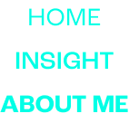
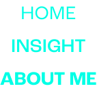

나는 존재하지 않는다. 나는 타자로서 존재한다. 이 사회는 자신의
존재 이유를 타자를 통해 인식하고자 하는 경향이 있다. 자신이 정한 자아상과 타자가 보는 내가 일치하기를 바라는 것도, 누군가를 쉽게
판단하고 분류 하는 것이 자연스러워진 것도.
긴장
사람이 긴장할 때 신체에서
가장 먼저 반응하는 곳이 어딜까.
나는 심장이다. 심장이 점점
빠르게 뛰며 몸이 조금씩 떨려온다.
이 포스터는 심장 박동 소리에 맞춰
자유 자대로 변형되는 오브제를
통해 사소한 순간에도 긴장하고
떨려 하는 누군가를 담아내고 있다.
내면의 중첩
‘누군가의 겉모습은 가장 바깥쪽에
있는 내면일 거다’라는 생각에서
만든 포스터로, 복잡한 사람의
내면을 표현함과 동시에 모두가
하나쯤 가진 결핍을 담았다.
분노
분노와 짜증의 차이점을 아는가. 분노가 현재의 문제를 중단하고
문제에 대한 총체적인 의문을 제기하는 것이라면, 짜증은 아무것도
중단하지 않은 채 신경질만 부리는 것이라고 나는 생각한다. 어디에도
나쁜 감정은 없다. 개별적인 색과 종류가 있을 뿐이다. 다만, 현재
이 사회에 필요한 감정은 바꾸지 못한 것에 대한 한탄이나 짜증보다는
현상황에 대한 변화의 씨앗으로 거듭날 수 있는 '분노'가 아닐까.


 
